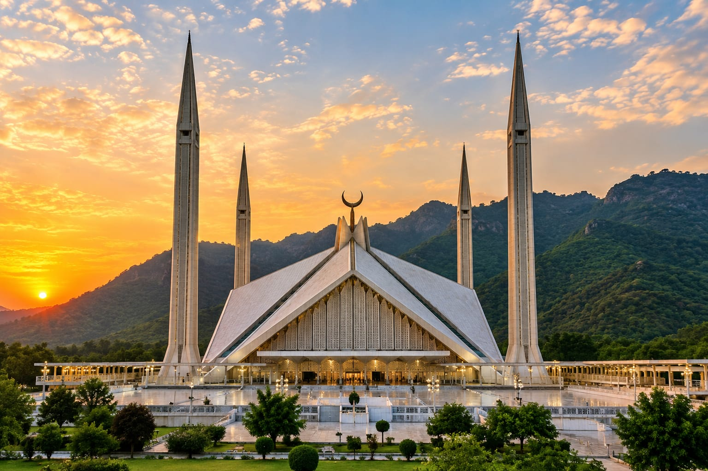

MIHRAB
famous mosques
Mosques are more than places of prayer spaces. They are also remarkable records of history, culture, architecture and human creativity. Across centuries, rulers, architects and communities have built mosques that became symbols of their cities and civilizations.
From the Mughal architecture of Lahore to the modern grandeur of Abu Dhabi, each mosque has a story behind its walls. Explore the history, people, architecture and fascinating facts behind six remarkable mosques from around the world.
1. BADSHAHI MOSQUE
Lahore, Pakistan

Introduction
The Badshahi Mosque is one of the most famous landmarks of Lahore and one of the greatest examples of Mughal architecture in the Indian subcontinent. Its enormous courtyard, red sandstone walls, marble details and impressive domes make it one of Lahore's most recognizable historical monuments.
Who Built / Commissioned It?
The mosque was commissioned by Mughal Emperor Aurangzeb Alamgir. Construction was supervised by Fidai Khan Koka, who was an important Mughal official and governor of Lahore.
When Was It Built?
Construction began in 1671 and the mosque was completed in 1673.
Why Was It Built?
Emperor Aurangzeb commissioned the mosque as a major imperial mosque and a symbol of Mughal power and Islamic architecture. Its enormous scale reflected the importance of Lahore during the Mughal period.
Historical Backstory
Aurangzeb became Mughal emperor in 1658 and ruled one of the largest empires in South Asian history. During his reign, Lahore remained an important political, cultural and military center.
In 1671, Aurangzeb ordered the construction of a grand mosque near the Lahore Fort. The mosque was completed in only about two years, an impressive achievement considering its enormous size.
The Badshahi Mosque later witnessed major changes in Lahore's history. After the decline of the Mughal Empire, it was used for different purposes and was also affected by the Sikh and British periods.
Today, the mosque remains one of Pakistan's most important historical monuments and represents the artistic and architectural achievements of the Mughal era.
Architectural Design
- Three large marble-domed structures
- Four tall corner minarets
- Large red sandstone walls
- White marble decoration
- Large central prayer hall
- One of the largest mosque courtyards of its era
- Traditional Mughal arches and ornamental details
Historical Importance
The Badshahi Mosque represents the height of Mughal architectural ambition in Lahore. It stands beside the Lahore Fort and forms an important part of the historic landscape of the city.
Interesting Facts
FACT 1
It was completed in 1673 during the reign of Emperor Aurangzeb.
FACT 2
Its enormous courtyard can accommodate a very large number of worshippers.
FACT 3
It is located directly opposite the Lahore Fort.
FACT 4
It is considered one of the finest surviving examples of Mughal mosque architecture.
2. SHEIKH ZAYED GRAND MOSQUE
Abu Dhabi, United Arab Emirates

Introduction
The Sheikh Zayed Grand Mosque is one of the most recognizable modern mosques in the world. Located in Abu Dhabi, it combines traditional Islamic architectural elements with modern engineering and craftsmanship.
Who Built / Commissioned It?
The mosque was initiated by Sheikh Zayed bin Sultan Al Nahyan, the founding father and first President of the United Arab Emirates.
When Was It Built?
Construction began in 1996. The mosque officially opened for worship in 2007.
Why Was It Built?
Sheikh Zayed wanted to create a grand mosque that would represent Islamic values, unity and cultural diversity. He also wanted it to become an important landmark of the newly developing United Arab Emirates.
Historical Backstory
Sheikh Zayed bin Sultan Al Nahyan played a central role in the formation of the United Arab Emirates in 1971. He believed that architecture could express cultural identity and bring people together.
He envisioned a mosque that would be open and welcoming while demonstrating the beauty of Islamic architecture. Construction began in 1996 and involved craftsmen, architects and materials from different parts of the world.
Sheikh Zayed passed away in 2004, before the mosque was completely finished. He was buried in the mosque complex, beside the mosque he had envisioned.
Today, the mosque is both a place of worship and an internationally recognized cultural landmark.
Architectural Design
- 82 white marble domes
- Four tall minarets
- White marble exterior
- Reflecting pools surrounding the mosque
- Large hand-crafted carpets
- Beautiful floral marble designs
- Crystal chandeliers
Historical Importance
The mosque represents the UAE's connection to Islamic heritage while also showing how traditional architecture can be expressed through modern construction.
Interesting Facts
FACT 1
The mosque is named after Sheikh Zayed bin Sultan Al Nahyan.
FACT 2
Its exterior is covered extensively with white marble.
FACT 3
Its main prayer hall contains one of the world's largest hand-knotted carpets.
FACT 4
The mosque combines architectural influences from different Islamic traditions.
3. FAISAL MOSQUE
Islamabad, Pakistan

Introduction
Faisal Mosque is one of Pakistan's most iconic landmarks. Located at the foot of the Margalla Hills in Islamabad, its unusual tent-shaped design makes it very different from many traditional mosques.
Who Built / Commissioned It?
The mosque was named after King Faisal bin Abdulaziz Al Saud of Saudi Arabia, who supported the project. The design was created by Turkish architect Vedat Dalokay.
When Was It Built?
Construction began in 1976 and the mosque was completed in 1986.
Why Was It Built?
The mosque was developed as a major national and Islamic landmark for Pakistan. King Faisal of Saudi Arabia provided important financial support for its construction.
Historical Backstory
In the 1960s, plans were developed for a grand mosque in Islamabad, the newly planned capital of Pakistan. An international competition was held to find a suitable design.
Turkish architect Vedat Dalokay won the competition. Instead of following the traditional South Asian dome design, he created a structure inspired by a Bedouin tent.
King Faisal bin Abdulaziz of Saudi Arabia supported the project financially. After his death, the mosque was named Faisal Mosque in his memory.
The mosque became one of Islamabad's most important landmarks and remains one of the most recognizable symbols of Pakistan.
Architectural Design
- Large tent-inspired prayer hall
- Four tall minarets
- Modern geometric structure
- White marble exterior
- Open prayer spaces
- Distinctive triangular roof structure
- Located against the Margalla Hills
Historical Importance
Faisal Mosque represents a modern interpretation of Islamic architecture. Its design shows that a mosque can preserve its religious identity without copying traditional architectural forms.
Interesting Facts
FACT 1
It was designed by Turkish architect Vedat Dalokay.
FACT 2
Its design was inspired by a Bedouin tent.
FACT 3
It has four prominent minarets.
FACT 4
It stands at the foot of the Margalla Hills.
4. BLUE MOSQUE
Istanbul, Türkiye

Introduction
The Blue Mosque, officially known as the Sultan Ahmed Mosque, is one of Istanbul's most famous landmarks. It is admired for its six minarets, cascading domes and thousands of blue Iznik tiles decorating its interior.
Who Built / Commissioned It?
The mosque was commissioned by Ottoman Sultan Ahmed I. It was designed by the architect Sedefkâr Mehmed Agha, a student of the famous Ottoman architect Mimar Sinan.
When Was It Built?
Construction began in 1609 and was completed in 1616.
Why Was It Built?
Sultan Ahmed I wanted to establish a major imperial mosque in Istanbul that would demonstrate the strength and artistic achievements of the Ottoman Empire.
Historical Backstory
Sultan Ahmed I became Ottoman Sultan at a young age. During his reign, he ordered the construction of a magnificent mosque near the historic Hagia Sophia and the ancient Hippodrome.
The mosque was designed by Sedefkâr Mehmed Agha, who had studied under the legendary Ottoman architect Mimar Sinan. His design combined classical Ottoman mosque traditions with an impressive arrangement of domes and semi-domes.
The mosque became known as the Blue Mosque because of the blue-colored Iznik tiles used extensively inside the building.
It remains an active place of worship and one of Istanbul's most visited historical monuments.
Architectural Design
- Six tall minarets
- Large central dome
- Multiple cascading semi-domes
- Thousands of Iznik tiles
- Traditional Ottoman architectural style
- Elegant interior calligraphy
- Large central prayer space
Historical Importance
The Blue Mosque is an important example of classical Ottoman architecture and stands as one of the defining monuments of Istanbul's historic skyline.
Interesting Facts
FACT 1
Its official name is Sultan Ahmed Mosque.
FACT 2
It is famous for its six minarets.
FACT 3
Its interior contains thousands of decorative Iznik tiles.
FACT 4
It was built during the reign of Sultan Ahmed